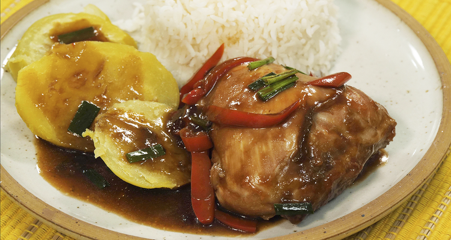

Pollo al sillao - Chicken in soy sauce

Chicken in soy sauce, one of my favorites: roasted chicken thighs with soy sauce, garlic and ginger, served with roasted sweet potatos and fluffy white rice to mop up the flavorful juices
Chicken in soy sauce is one if not the most delicious dish I have ever eaten. It's one
those dishes you remember from your childhood. What's even better, it is really easy to make!
Ingredients
- 8 chicken thighs
- 4 garlic cloves, sliced or grated
- 1 lime
- 1 tablespoon ginger, grated
- ½ cup Kikkoman soy sauce
- ½ cup honey
Preparation
- Place the chicken in a pyrex. I use the skin because it protects the flesh in the oven, but you can use skinned chicken.
- Season with garlic, lime zest, lime juice, and ginger.
- In a small bowl combine Kikkoman soy sauce and honey, and season the chicken with this mixture. Cover and marinate overnight or at least for one hour.
- Preheat the oven to 375ºF.
- Uncover the chicken, add water and bake for one hour, basting every 20 minutes with the juices. The chicken should have a beautiful brown color.
Home